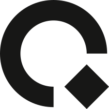
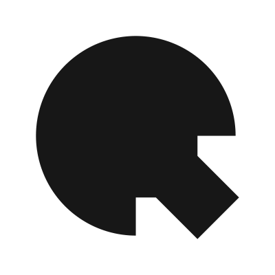
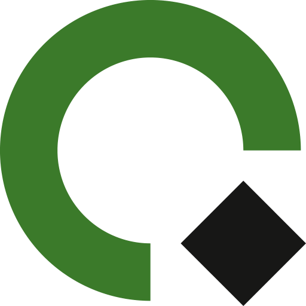
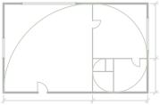

Manual da marca
A marca da TETO Arquitetura Sustentável, de Limeira (SP), redesenhada em novembro de 2026. Aqui estão a construção do símbolo, as versões, as cores, a tipografia e as regras de uso.
Um anel aberto em um quarto e, na abertura, um quadrado em pé sobre a ponta.
O anel é o gramado, a copa da árvore, o ciclo de uma obra que devolve ao terreno o que tirou. É verde Grama.
O quadrado é a casa. Em pé sobre a ponta, as duas faces de cima formam um telhado de duas águas: o teto que dá nome ao escritório. É preto Ferro, como as vigas e os caixilhos das obras.
O vão entre os dois é constante. A ponta do quadrado aponta para o canto interno do anel, e é essa relação que faz das duas formas uma marca só.
Construção
O símbolo é desenhado numa unidade u e numa única série: cada medida é a anterior multiplicada por φ, 1,618. Como φ² = φ + 1, cada raio é a soma dos dois anteriores. As medidas vêm de uma única série, por isso as partes combinam.
O anel tem raio externo φ⁵ e interno φ⁴, então a espessura é φ³. Os dois eixos cortam o anel, e os cortes são radiais: encontram os arcos a 90°, um canto decidido e não um acidente. O losango tem o centro no ponto (r, r), o canto do quadrado que circunscreve o vazio. Com semidiagonal φ³ as pontas tocariam exatamente o quadrado do anel, porque r + φ³ = R. Como uma ponta parece menor que uma curva no mesmo limite, o losango recebe φ⁻² de compensação ótica.
| Elemento | Medida | Valor em u |
|---|---|---|
| Raio externo do anel (R) | φ⁵ | 11,090 |
| Raio interno do anel (r) | φ⁴ | 6,854 |
| Espessura do anel | R − r = φ³ | 4,236 |
| Centro do losango | (r, r) | 6,854; 6,854 |
| Semidiagonal do losango (a) | φ³ + φ⁻² | 4,618 |
| Compensação ótica das pontas | φ⁻² | 0,382 |
| Vão entre a ponta e o corte do anel | r − a = φ² − φ⁻² = √5 | 2,236 |
| Caixa do símbolo | 2φ⁵ + φ⁻² | 22,562 |
| Área de proteção | φ³ | 4,236 |
O contorno tem só arcos dos círculos da grade e retas, sem curva livre. O arquivo é gerado por script a partir dos círculos (construcao/gerar_marca.py), que confere cada raio, cada corte e o menor vão, e grava o relatório em construcao/verificacao.txt.
O letreiro segue a mesma série. A altura das versais de TETO é φ⁵, o raio do anel. O descritor tem duas linhas de versal φ³ com entrelinha φ², e φ³ + φ² + φ³ = φ⁵: o bloco fecha na altura do TETO.
Versões
A horizontal é a assinatura principal. A vertical serve a formatos altos e centrados, como capa e placa. O símbolo sozinho entra onde o nome já aparece por perto ou onde falta espaço: favicon, avatar, carimbo, rodapé de prancha.
Arquivos na pasta logo: símbolo, horizontal e vertical em SVG (colorida, preta, branca e negativa), PNG de 512 e 32 px e favicon.
Proteção e tamanho mínimo
A área de proteção é a espessura do anel, φ³, medida a partir da caixa da assinatura nos quatro lados. Nada entra nela: texto, borda de página, dobra, outro logo. Na prática, se a assinatura tem 40 px de altura, a margem livre é de 7,5 px.
| Versão | Tela, altura mínima | Impressão, altura mínima | O que limita |
|---|---|---|---|
| Símbolo | 16 px | 5 mm | Vão de √5 u: 1,6 px a 16 px. Pela conta, o vão só fecha abaixo de 10 px. |
| Horizontal | 40 px | 10 mm | Versal do descritor (φ³) com 7,5 px. Abaixo disso, use só o símbolo. |
| Vertical | 150 px | 30 mm | Versal do descritor (φ²) com 7,6 px. |
Cores
Verde junto ao preto. O Grama vem do gramado e da copa; o Ferro, das vigas e dos caixilhos. O Cal é o fundo, quente como parede caiada. O Telha entra pouco, como a telha de barro entra na obra, e nunca no logo. O verde-limão do logo anterior sobrevive como Broto, só sobre fundo escuro.
| Texto sobre | Cal | Cal escuro | Branco | Grama | Grama profundo | Ferro |
|---|---|---|---|---|---|---|
| Grama | 4,62 AA | 4,11 grande | 5,25 AA | — | 1,79 falha | 3,42 grande |
| Grama profundo | 8,28 AA | 7,37 AA | 9,40 AA | 1,79 falha | — | 1,91 falha |
| Ferro | 15,79 AA | 14,06 AA | 17,94 AA | 3,42 grande | 1,91 falha | — |
| Pedra | 6,04 AA | 5,38 AA | 6,86 AA | 1,31 falha | 1,37 falha | 2,61 falha |
| Telha | 4,66 AA | 4,15 grande | 5,29 AA | 1,01 falha | 1,78 falha | 3,39 grande |
| Broto | 1,80 falha | 1,60 falha | 2,04 falha | 2,57 falha | 4,60 AA | 8,78 AA |
| Cal | — | 1,12 falha | 1,14 falha | 4,62 AA | 8,28 AA | 15,79 AA |
| Branco | 1,14 falha | 1,28 falha | — | 5,25 AA | 9,40 AA | 17,94 AA |
O Grama foi mantido em #3B7A2A, o tom que o site já usa. Ele passa AA como texto sobre Cal (4,62:1) e sobre Branco (5,25:1) e ainda guarda 3,42:1 contra o Ferro, o que separa o anel do losango mesmo em cinza. Um verde mais escuro ganharia folga no fundo claro, mas cairia abaixo de 3:1 contra o preto, e o anel colaria no losango. Sobre Cal escuro o Grama não passa como texto (4,11:1); ali o texto verde é Grama profundo.
Tipografia
Archivo, uma grotesca com eixo de largura (62 a 125) e de peso (100 a 900), livre no Google Fonts. Uma família só. A largura de 75% com peso 800 faz o letreiro e os títulos, condensada como o letreiro anterior. A largura normal faz o texto. No logo o letreiro está em contornos: nunca redigite TETO numa fonte.
ABCDEFGHIJKLMNOPQRSTUVWXYZ 0123456789 ÁÉÍÓÚ ÃÕ Ç
Casas que nascem do terreno, da sombra das árvores e da técnica certa. Tijolo e telha de barro, vigas de aço aparentes, madeira e muito verde em volta.
TítulosLargura 75%, peso 800, entrelinha 0,95, espaçamento −0,01 em.
SubtítulosLargura 100%, peso 700, entrelinha 1,15. Usar pouco.
TextoLargura 100%, peso 400, 17 px, entrelinha 1,6, até 64 caracteres por linha.
| Papel | Largura | Peso | Regra |
|---|---|---|---|
| Letreiro TETO | 75% | 800 | Só no logo, em contornos. Espaçamento de 0,01 em. |
| Descritor do logo | 100% | 600 | Caixa alta, espaçamento de 0,06 em. Só no logo. |
| Títulos | 75% | 800 | Caixa normal. Sem itálico, sem trocar de família numa palavra. |
| Texto e botões | 100% | 400 e 600 | Alinhado à esquerda, nunca justificado. |
| Números de projeto e medidas | 100% | 500 | Algarismos tabulares, unidade com espaço: 240 m². |
Usos incorretos
A marca só existe nas proporções e cores deste manual. Os seis erros abaixo são os mais prováveis.
Testes
Antes de aprovar, o símbolo passou pelos testes do método de construção de logo. Cada imagem foi gerada do mesmo arquivo e olhada, não presumida.
16 px
Passou. O vão fica com 1,6 px e o anel com 3 px. O losango continua losango, não vira ponto.
32 px
Passou. Cortes retos do anel e pontas do losango legíveis.

Uma cor
Passou. A leitura vem do vão entre as peças, não da diferença de cor.
Invertido
Passou. Claro sobre escuro o anel parece um pouco mais pesado, mas o vão e o vazio central se mantêm abertos.
Desfoque
Passou. Com desfoque de 8% da altura sobra um arco aberto e um ponto no canto. A direção se mantém.

Silhueta
Passou. Com os vazios preenchidos, o contorno ainda tem caráter: um disco mordido no canto, com a ponta do losango saindo.

Detalhe que some
Passou. Nada no símbolo é menor que o vão de √5 u. O texto circular, que só existia em tamanho grande, saiu.
Ilustração
Passou. Descrito em voz alta: um anel aberto e um quadrado girado. Duas formas, sem "e aqui um...".
Reconhecimento em 1 segundo
Pendente. Redesenha-se em dois gestos, um C e um quadrado girado, mas o teste com pessoas ainda não foi feito.
Genérico
Passou com ressalva. Anel com peça no canto de baixo à direita lembra a letra Q e o ícone de lupa. O corte reto do anel e o losango solto afastam a leitura, e o logo anterior já tinha essa forma.
Aplicações
Quatro pontos de contato de verdade: o cabeçalho do site sobre foto e sobre fundo claro, o cartão de visita e a placa de obra que fica nos canteiros.
Paulo Trigo
Arquiteto e urbanista
(19) 98808-2306
arq.teto.paulo@gmail.com
teto2r.com
Residência unifamiliar
- Projeto
- Arquitetura e paisagismo
- Responsável técnico
- Paulo Trigo, arquiteto e urbanista
- Registro
- CAU A000000-0
- RRT
- 0000000
Extras: ornamentos
Acréscimo ao manual. Tudo acima é a versão inicial da marca. Aqui ficam quatro ornamentos para o papel timbrado e o site, tirados das casas do escritório. A regra é economia: um ornamento por área, traço fino e muito espaço vazio.
Divisor: viga sobre pilares
Uma viga de φ⁰ sobre dois pilares de φ⁻¹, passando φ⁴ além de cada um. Vem da viga em balanço da Casa T+J. É o único ornamento em Grama.
- Onde
- Entre duas seções, centrado, 16 px de altura. Uma vez por tela.
- Mínimo
- 10 px de altura.
- Cores
- Grama sobre claro; Cal sobre escuro.
- Código
--teto-orn-divisor-laje-grama·ornamentos/divisor-laje-grama.svg
Grade de caixilho
Um retângulo áureo dividido em quadrados da série, em traço de 1 px. Vem do grande caixilho de ferro da Casa Bela Vista.
- Onde
- Fundo de uma seção de abertura, grande e cortada pela borda, longe do texto.
- Mínimo
- 320 px de largura; o traço não escala.
- Cores
- Ferro a 30% sobre Cal; Cal a 40% sobre escuro.
- Código
--teto-orn-caixilho-ferro·ornamentos/caixilho-ferro.svg
Linha fina à esquerda de um bloco de texto, de ponta a ponta da folha ou da seção.
Linha vertical
Uma linha de 1 px que acompanha a coluna de texto, como o montante de um caixilho. Uma só por página.
- Onde
- Margem do papel timbrado; lateral de um texto longo no site.
- Mínimo
- 1 px na tela, 0,15 mm impressa.
- Cores
- Ferro a 30% sobre claro; Cal a 40% sobre escuro.
- Código
--teto-orn-linha-ferro·ornamentos/linha-ferro.svg

Planta áurea
Uma planta baixa sobre o retângulo de ouro: cada quadrado da série é um cômodo, as portas abrem no quarto de círculo do símbolo, as cotas marcam 1 : 0,618 e a espiral passa por dentro, em Grama. No site, ela se desenha durante a rolagem.
- Onde
- Fundo de uma seção de abertura ou capa, grande, cortada pela borda e longe do texto. Uma por página; substitui a grade de caixilho, nunca as duas juntas.
- Mínimo
- 480 px de largura; o traço não escala (paredes 2,5 px, demais 1 px).
- Cores
- Ferro a 32% com espiral Grama sobre claro; Cal a 40% com espiral Broto sobre escuro.
- Código
--teto-orn-planta-ferro·ornamentos/planta-aurea-ferro.svg· versão animável:ornamentos/planta-aurea-inline.svg· gerador:construcao/gerar_planta.py
Papel timbrado
teto2r.com
(19) 3702-8400
Limeira, 19 de novembro de 2026
Prezado cliente,
Segue a proposta de projeto de arquitetura e paisagismo para a sua residência, com o cronograma das três etapas e o escopo de cada uma.
Ficamos à disposição para uma visita ao terreno.
Paulo Trigo
Arquiteto e urbanista
Rua Dário Prada, 348, Real Parque, Limeira (SP), 13480-686
- Cabeçalho
- Só a assinatura horizontal, com 40 mm de largura, e os contatos à direita.
- Margem
- A linha vertical a 25 mm da borda, de ponta a ponta da folha.
- Corpo
- O divisor, se precisar, antes do fecho. Nada mais.
- Rodapé
- Só o endereço, em Pedra, corpo 7.
Site
No máximo dois ornamentos por página: a grade no fundo da abertura e o divisor entre as seções.
Rua Dário Prada, 348, Real Parque, Limeira (SP)
(19) 3702-8400